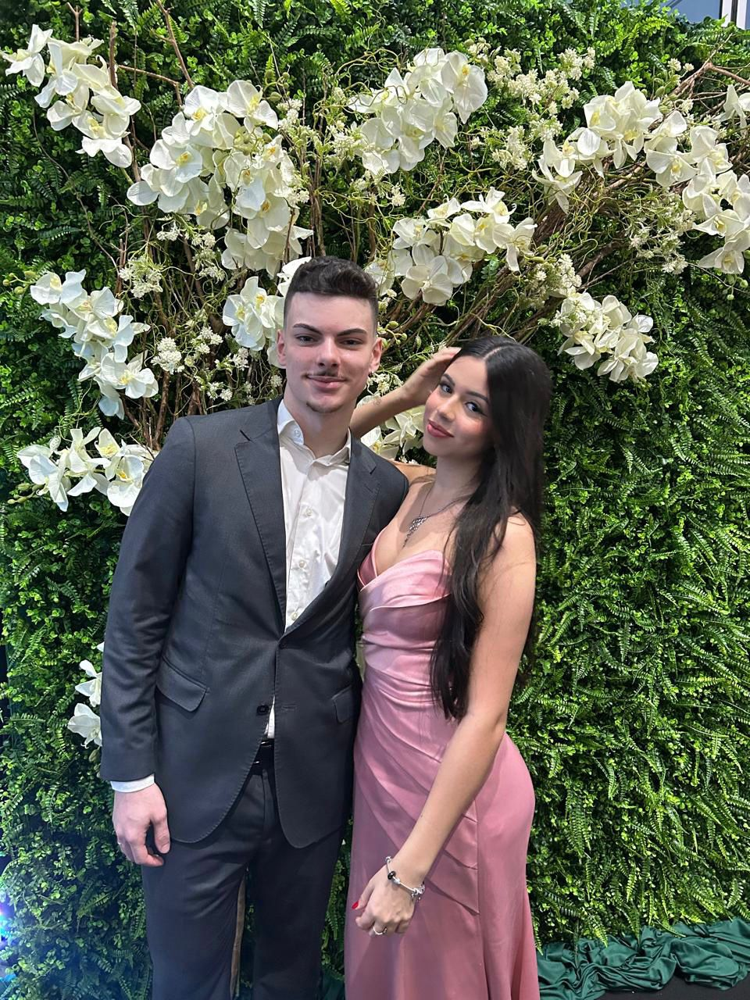
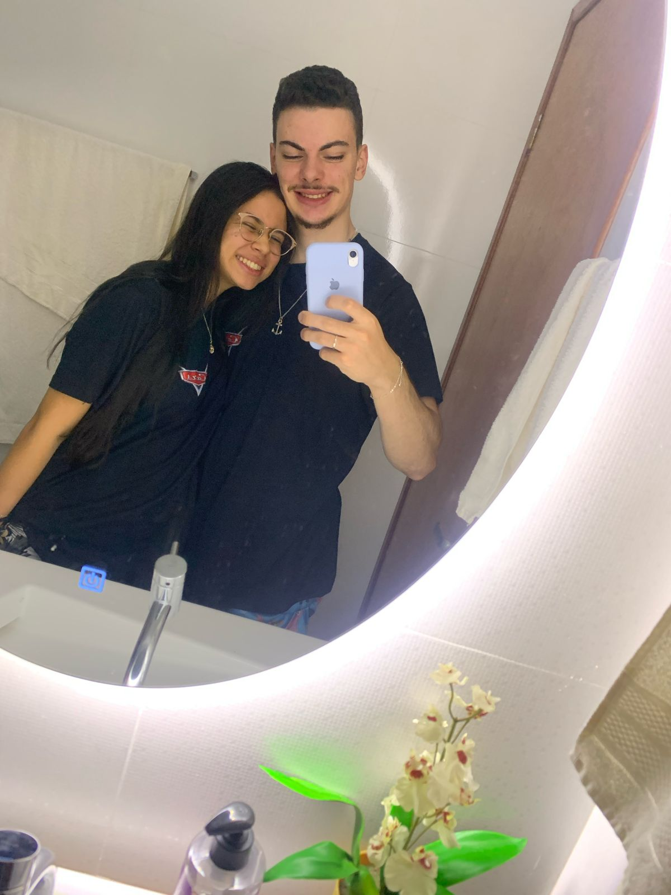
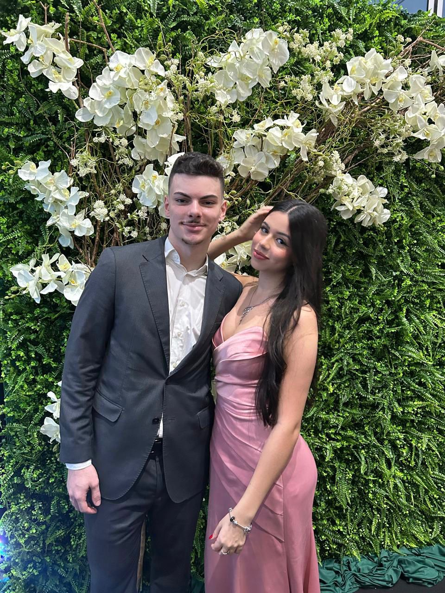
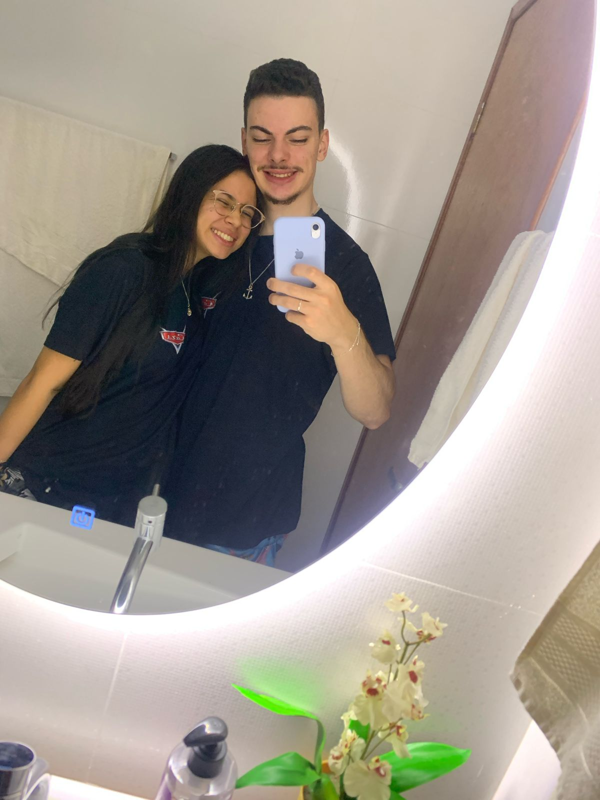

Te amo, meu amor 💖
Estamos juntos há:
Nossas lembranças


 




Primeiro Dia dos Namorados com a mulher mais linda e perfeita do universo, que me ensinou o verdadeiro significado do amor, do companheirismo e que me encanta de um jeito diferente todos os dias. Eu não tenho como descrever em palavras o quanto você é importante para mim. Nunca estive tão feliz em toda a minha vida.
Fico ansioso só de pensar nas centenas de histórias que ainda vamos viver e que poderemos contar para os nossos futuros filhos. Tony, Guto e Sofia vão amar ouvir a história do nosso primeiro "eu te amo", do dia em que eu te pedi em namoro e nós juntamos nossas vidas para sempre. E nós vamos mostrar para eles essa cartinha do nosso primeiro Dia dos Namorados, para verem o quanto o pai deles é romântico.
Eu te amo mais que tudo nesse mundo. Prometo sempre proteger você, cuidar de você e te dar muito carinho. Obrigado por fazer de mim o homem mais feliz do mundo.
Feliz Dia dos Namorados, minha pituca.
Para você:
Você é a melhor parte da minha vida. Cada momento ao seu lado é mágico. 💕